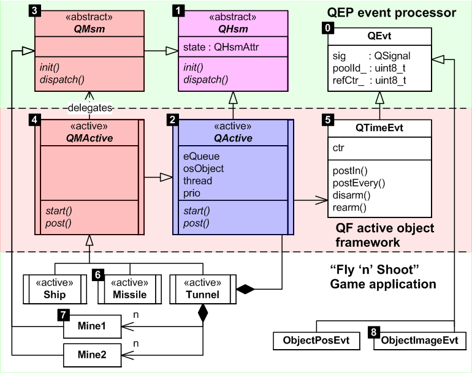

Architecture (SAS)Design (SDS)
Architecture Items
The following class diagram shows the main classes comprising the QP Framework and their relation to the application-level code, such as the Flyn 'n' Shoot game example application (shown at the bottom 1/3 of the diagram).

Figure 210: Main Classes in the QP Framework
AQP210
::QEvt class
- Amplification
- The ::QEvt class (Figure 210[0]) represents events without parameters and serves as the base class for derivation of events with parameters as well as time events. For example, application-level events
ObjectPosEvt and ObjectImageEvt (Figure 210[8]) inherit ::QEvt and add to it some parameters.
- Traceability
- RQP003 RQP103
AQP211
::QHsm abstract class
- Amplification
- The abstract ::QHsm class (Figure 210[1]) represents a Hierarchical State Machine (HSM) with full support for hierarchical nesting of states, entry/exit actions, initial transitions, and transitions to history in any composite state. This class is designed for ease of manual coding of HSMs in C, but it is also supported by the QM modeling tool. ::QHsm is also the base class for the ::QMsm state machine, which provides a superior efficiency, but requires the use of the QM modeling tool to generate code.
- Traceability
- RQP101 RQP102 RQP103 RQP120
AQP212
::QActive abstract class
- Amplification
- The abstract ::QActive class (Figure 210[2]) represents an active object that uses the ::QHsm style implementation strategy for state machines. This strategy is tailored to manual coding, but it is also supported by the QM modeling tool. The resulting code is slower than in the ::QMsm-style implementation strategy. The game application provides an example of application-level classes deriving from ::QActive and ::QHsm (see Figure 210[6] and Figure 210[7]).
AQP213
::QMsm abstract class
- Amplification
- The abstract ::QMsm class (Figure 210[3], QM State Machine) derives from ::QHsm and implements the fastest and the most efficient strategy for coding hierarchical state machines, but this strategy is not human-maintainable and requires the use of the QM modeling tool. The class is abstract, meaning that it is not designed to be instantiated directly, but rather only for inheritance.
- Traceability
- RQP104 RQP120 RQP130
AQP214
::QMActive abstract class
- Amplification
- The abstract ::QMActive class (Figure 210[4]) represents an active object that uses the ::QMsm state machine implementation strategy. This strategy requires the use of the QM modeling tool to generate state machine code automatically, but the code is faster than in the ::QHsm style implementation strategy and needs less run-time support (smaller event-processor).
AQP215
::QTimeEvt class
- Amplification
- The ::QTimeEvt class (Figure 210[5]) represents time events in QP. Time events are special QP events equipped with the notion of time passage. The basic usage model of the time events is as follows. An active object allocates one or more ::QTimeEvt objects (provides the storage for them). When the active object needs to arrange for a timeout, it arms one of its time events to fire either just once (one-shot) or periodically. Each time event times out independently from the others, so a QP application can make multiple parallel timeout requests (from the same or different active objects). When QP detects that the appropriate moment has arrived, it inserts the time event directly into the recipient's event queue. The recipient then processes the time event just like any other event.
Classes in QXK
The figure below shows the main classes introduced in the QXK kernel and their relation to the classes of the QP framework.

Classes of the QXK dual-mode kernel
[0] The abstract ::QActive class represents active objects in QP. This class contains the thread object of the underlying kernel (QXK thread-control-block in this case) as well as the event queue and the unique priority of the active object.
[1] The ::QXThread class represents the extended (blocking) threads of the QXK kernel. It inherits ::QActive, so that extended-threads can be treated as active objects internally in the framework. However, the extended-threads do not implement state machines. Instead, the data fields used for storing the current state in active objects are re-used to store the private stack of the extended-thread. The ::QXThread class also contains the timeEvt object (see ::QTimeEvt) for generating timeouts when the extended-thread is blocked.
[2] The ::QXMutex class represents the priority-ceiling mutex of the QXK kernel. The mutex can block and can be used only in the extended-threads (in case they share resources that need to be protected). The mutex is recursive, meaning that it can be locked multiple times from the same extended thread (but it needs to be unlocked equal number of times).
[3] The ::QXSemaphore class represents the counting semaphore of the QXK kernel. The semaphore can be waited on only in the extended-threads and the QXK kernel would assert if an active object thread would attempt to wait on a semaphore. On the other hand, a semaphore can be signaled from anywhere in the code, including active objects and ISRs.
- Note
- The main takeaway from the QXK class diagram is QXK's optimal, tight integration with the QP framework. The QXK kernel reuses all mechanisms already provided in QP, thus avoiding any code duplication, inefficient layers of indirection, and additional licensing costs, which are inevitable when using 3rd-party RTOS kernels to run QP applications.
Architecture (SAS)Design (SDS)